Der GeoHub Online Editor ist ein Tool um Geodaten zu erstellen. Die Geodaten können
anhand bereits vorhandener Geodaten ausgerichtet werden. Hierzu werden die Koordinaten der
Straßen und Gebäude als Stützpunkte und Linien geladen. Der Benutzer kann dann entlang
der bereits vorhandener Geodaten neue Daten erstellen.
Erklärung der einzelnen Funktionen
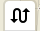
Lädt die Straßen-Geodaten für den aktuellen Bereich um sie als Stützdaten anzuzeigen. Mit Hilfe
der Stützdaten können andere Geo-Objekte ausgerichtet werden, z.B. endlang von Straßen oder
Gebäuden.
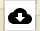
Lädt die Straßen und Gebäude-Geodaten für den aktuellen Bereich um sie als Stützdaten anzuzeigen.
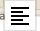
Öffnet den Editor um die Eigenschaften der ausgewählten Geodaten zu bearbeiten. Die Eigenschaften
sind einfache Schlüssel-Wert Paare, die jedem Objekt oder einer Gruppe von Objekten zugeordnet
werden können. Sind die Werte für manche Schlüssel unterschiedlich, so werden sie als Platzhalter
angezeigt.
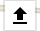
Lädt Geodaten von der Festplatte runter. Die Geodaten können im GEOJSON oder KML Format sein.
Es ist auch möglich die GSOJSON oder KML Datei einfach in den Browser zu ziehen um sie zu laden.
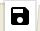
Speichert die aktuellen Geodaten als GEOJSON oder KML Datei auf der Festplatte. Alternativ können die
Daten auch als GIST gespeichert werden. Wenn nur bestimmte Objekte ausgewählt sind, so werden nur
sie gespeichert.
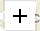
Auswahlwerkzeug um bestimmte Objekte auszuwählen. Bei gedrückter SHIFT-Taste können mehrere Objekte
selektiert werden.
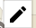
Zeichenwerkzeug zum Zeichnen von neuen Geodaten. Bei aktiviertem Snapping werden die Daten
automatisch entlang bereits vorhandener Geodaten gezeichnet. Beim Drücken der SHIFT-Taste wird das
Snapping deaktiviert. Beim Drücken der ALT-Taste wird das Routing deaktiviert. Zum Löschen
der letzten Punkte kann die ENFT-Taste gedrückt werden.
Beim erneutem Klick auf den letzten Punkt wird das Zeichnen beendet und das Objekt abgeschlossen.
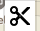
Schneidewerk trennt die aktuelle Linie in zwei Teile. Beim Trennen von Polygonen wird das Polygon
aufgelöst und eventuelle innere Polygone als einzelne Polygone ausgelöst.
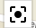
Snapping Funktion aktivieren oder deaktivieren. Mit der Snapping Funktion wird versucht immer
den nächstgelegenen Punkt als Stützpunkt zu verwenden.
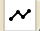
Routing Funktion aktivieren oder deaktivieren. Mit der Routing Funktion wird die gezeichnete Linie entlang bereits vorhandener Linien gezogen.
Dadurch stimmendie Daten exakt mit den bereits vorhandenen Geodaten überein.
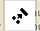
Kombiniert die ausgewählten Objekte zu einem Objekt. Mehrere Linien werden dabei zu einer Linie
zusammengeführt. Die erste Linie legt dabei die Richtung für die Gesamtlinie fest.
Bei mehreren Polygonen ist das erste Polygon das äußere und die anderen sind die inneren Polygone.
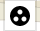
Objekte gruppieren. Es können nur Linien mit Linien (MultiLineString) und Polygone mit
Polygonen (MultiPolygon) gruppiert werden.
Gruppierung rückgängig machen. Die gruppierten Objekte werden dabei in ihre Ursprungsformen
aufgeteilt.
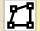
Eine Linie zum Poylgon machen. Sind der Anfang- und Endpunkt nicht gleich, dann wird das
Polygon automatisch geschlossen.
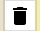
Gezeichnete Daten löschen. Löscht alle Benutzerdaten. Kann nicht rückgängig gemacht werden.
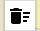
Löscht die Sützdaten im Hintergrund.
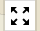
Bewegt die Karte so, dass alle Benutzerobjekte sichtbar sind.
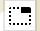
Versteckt die gerade ausgewählten Objekt. Diese Funktion kann nützlich sein, wenn viele Objekte
übereinander liegen und man das gewünschte Objekte nicht direkt auswählen kann.
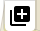
Fügt die aktuell ausgewählten Daten zur den Stützdaten hinzu.